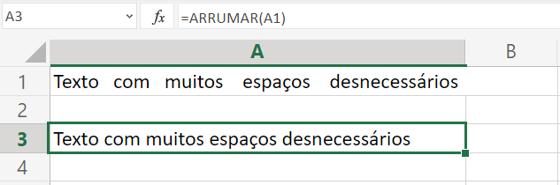
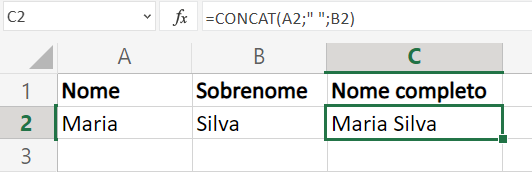
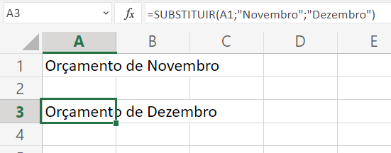
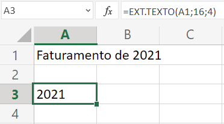

Texto
Função ARRUMAR
Remove todos os espaços do texto exceto os espaços únicos entre palavras. Use ARRUMAR no texto que recebeu de outro aplicativo que pode ter espaçamento irregular.
Exemplo de uso da função ARRUMAR:
Dicas:
Função CONCAT
A função CONCAT combina o texto de vários intervalos e/ou cadeias de caracteres. CONCAT substitui a função CONCATENAR. No entanto, a função CONCATENAR permanecerá disponível para compatibilidade com versões anteriores do Excel.
Exemplo de uso da função CONCAT:
Dicas:
- Clique aqui para mais informações.
Função SUBSTITUIR
Use SUBSTITUIR quando quiser colocar um novo texto no lugar de um texto presente em uma cadeia de texto.
Exemplo de uso da função SUBSTITUIR:
Dicas:
Função EXT.TEXTO
EXT.TEXTO retorna um número específico de caracteres a partir de uma seqüência de caracteres de texto, iniciando na posição que você especificar, com base no número de caracteres que você especificar.
Exemplo de uso da função EXT.TEXTO:
Dicas:
- Clique aqui para mais informações.